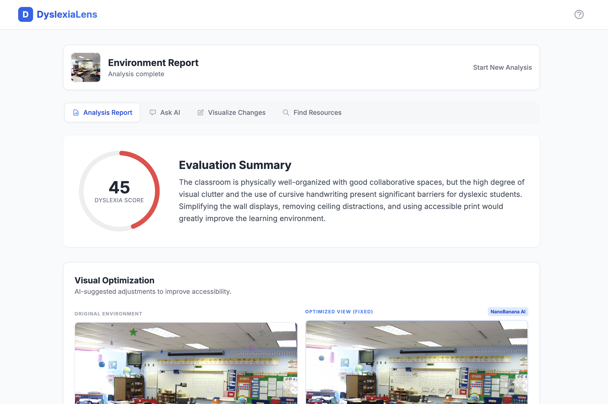

Throughout my primary education at a public school, I witnessed daily moments of inequitable opportunity for students with developmental disorders. With a lack of integrated support in the classroom, these individuals often fell behind their peers–even if they were receiving one-on-one support. Thereby, through discussion with developmental support counselors in the Guilford County area, I crafted DyslexiaLens. DyslexiaLens is a website that immerses students into accessible education along with their fellow students, without separation. The application analyzes a photo of any classroom environment, detects where issues may occur for students with visual processing disorders, and provides a “Dyslexia-Friendliness” rating. Consequently, the app offers ideas for changes that may be made. Through DyslexiaLens, I provide students with equal access to education without creating a barrier of separation. The application is currently receiving feedback, with plans to be implemented in public schools soon.